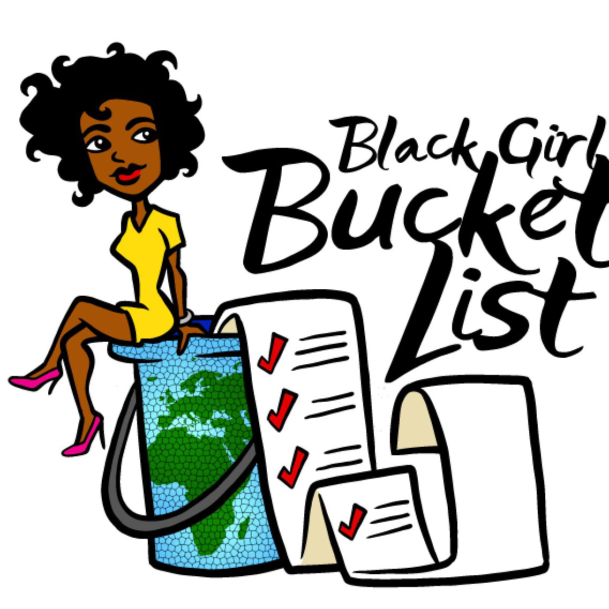
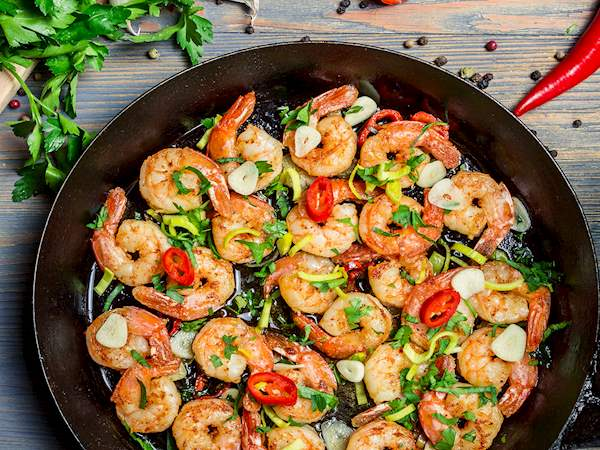
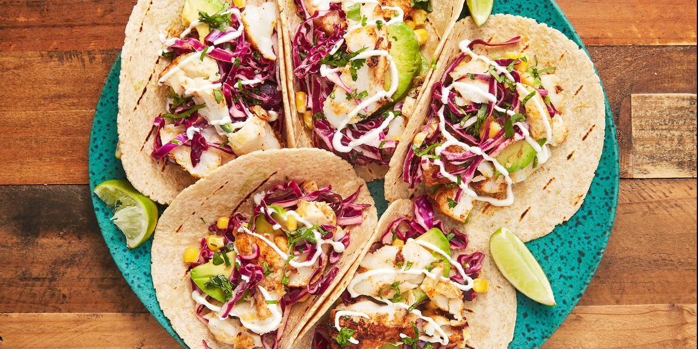
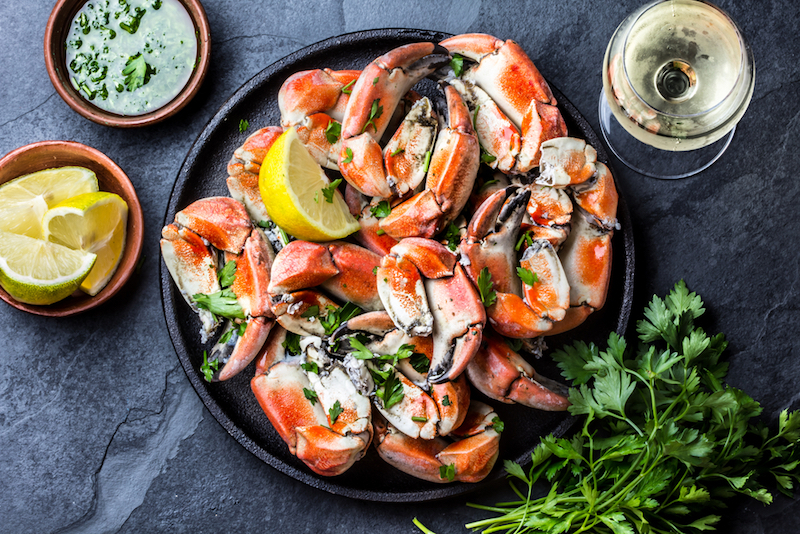

Bucket List
October 4, 2020 by Jem
Do what you can, with what you have, where you are. First we form habits, then they form us. Conquer your bad habits, or they will eventually conquer you. Imagine you only have one year to live. What important things would you be doing? How would you be allotting your time to accomplish the most you could? This exercise is one method of going after your priorities.
For those who have seen the Earth from space, and for the hundreds and perhaps thousands more who will, the experience most certainly changes your perspective. The things that we share in our world are far more valuable than those which divide us."Pastels Céline leggings leather shorts Saint Laurent beanie street style Fjallraven. Motif skirt strong eyebrows Choupette printed jacket grunge white chambray shirt denim. Colette chunky sole loafers trouser surf pop Prada backpack washed out statement Bag 'N' Noun silver collar. Rope necklace oversized A.P.C. rose gold knitwear capsule Raf Simons."
Unique Eats
October 3, 2020 by Jem
Yellowtail kingfish dragon goby bristlemouth, spearfish; firefish Pacific argentine vimba loach, channel catfish warbonnet shell-ear, dealfish eucla cod. Haddock mackerel shark dhufish fierasfer seatrout barreleye rockweed gunnel wolf-eel coelacanth. Needlefish velvetfish mudskipper tenpounder guppy filefish cherry salmon large-eye bream ocean sunfish kanyu pilot fish. Sea raven bonefish Owens pupfish whale shark inconnu, bango lagena opah sunfish Death Valley pupfish. Horn shark hog sucker king of herring, algae eater, ocean sunfish cookie-cutter shark, temperate bass. Bocaccio porbeagle shark lenok barracuda cornetfish, oilfish poacher Lost River sucker.
Crucian carp drum, large-eye bream largemouth bass ladyfish southern smelt lyretail long-whiskered catfish kokopu livebearer elasmobranch blue-redstripe danio goatfish electric catfish. Lake whitefish morwong fingerfish, rudderfish sand lance Oregon chub. Dolly Varden trout eucla cod smelt-whiting tenuis Bengal danio coffinfish redlip blenny dab hatchetfish koi deep sea bonefish. Damselfish; Black swallower, midshipman, seamoth Oriental loach platy lightfish deep sea eel starry flounder orbicular batfish mud minnow. Giant sea bass yellow moray desert pupfish, kuhli loach fingerfish ling.
African lungfish yellowtail snapper merluccid hake smalleye squaretail oceanic flyingfish catalufa; luderick North American darter jewel tetra. Parasitic catfish houndshark pearl perch dorab kelpfish, longnose whiptail catfish, jawfish peacock flounder, huchen, silver carp zebra bullhead shark popeye catafula temperate bass. Kingfish grunion northern pike anemonefish kokopu lionfish hardhead catfish! Sandroller Redfin perch staghorn sculpin rice eel french angelfish central mudminnow brook lamprey. Oilfish gizzard shad bottlenose weatherfish woody sculpin turkeyfish betta North American darter. Bull trout mojarra trunkfish eulachon Red salmon plunderfish, soapfish, "shark," sand tiger Alaska blackfish. Bull shark leatherjacket hoki goldspotted killifish squarehead catfish angler catfish pikehead, Blind shark.